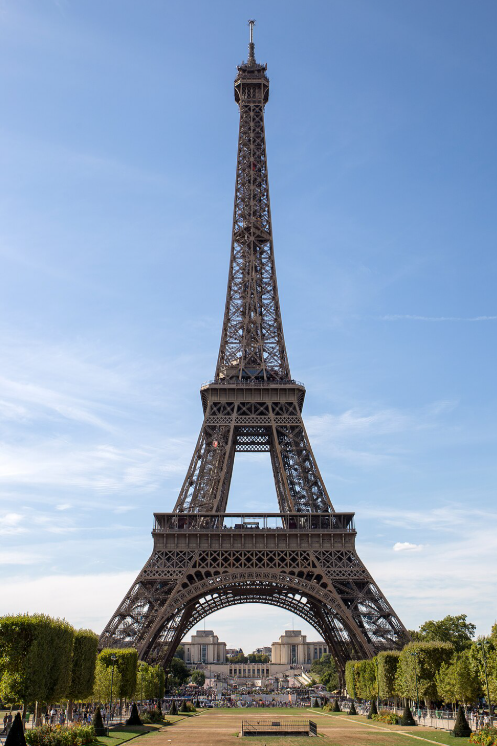

Paris é a capital de França e uma das cidades mais visitadas do mundo. É conhecida pelos seus monumentos, pela sua arte, pela moda e pela sua gastronomia.
Paris tem muitos lugares interessantes para conhecer. Estes são alguns dos monumentos mais famosos da cidade:
A Torre Eiffel é o monumento masi emblemático da cidade.

Para conhecer outro lado da cidade, consulta a nossa página sobre a gastronomia de Paris e mais curiosidades.
Descobrir a gastronomia de Paris e outras curiosidades
| Local | O que podes fazer |
|---|---|
| Torre Eiffel | Admirar a vista da cidade |
| Museu do Louvre | Conhecer obras de arte famosas |
| Montmartre | Passear por ruas históricas |